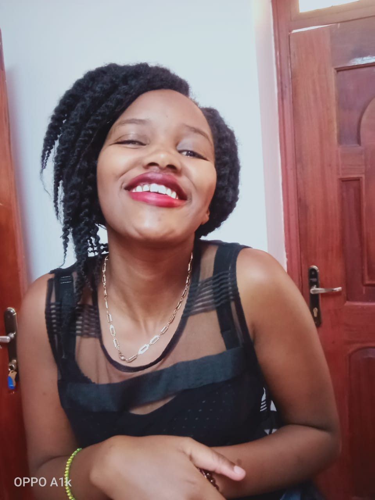

My name is Mercy Wangari a 21 years old student.
Currently pursuing a diploma in Information
Technology at Akirachix Campus.
This being my first blog I will be talking
about Born a Crime by Trevor Noah .
Born a Crime is the story about a mischievous
the young boy who grows into a restless young man as he
tries to find himself in a world where he was never supposed to exist.
Background

I come from Kenya,born in Nairobi county,
I am the first born of three siblings and
the only daughter of a single mother.
I was born on September 15th 1999
at Starehe estate in Nairobi county.
Motivation

I believe in the power of words to induce change personally and globally
Hobbies

I love listening to music,and also love singing
i also love pets. I also love travelling,hiking and taking photos,hanging out with friends.